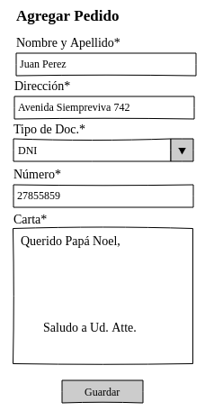
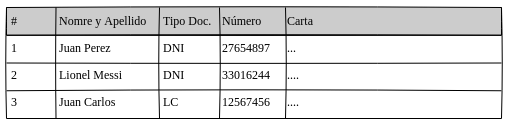
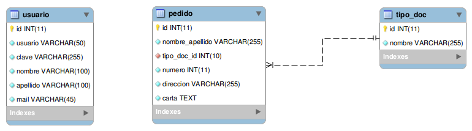

Proyecto de Software 2017 - Parcial 3ra Fecha - 16/12/2017
Tema 2
Se requiere desarrollar un prototipo simplificado que permita llevar el seguimiento de los pedidos realizados a Papá Noel. Para tal fin, se debe implementar la siguiente funcionalidad:
- Login de usuario: se deberá desarrollar el login de usuario, validando en el cliente y en el servidor que los datos ingresados no estén blanco, que exista el usuario en la base de datos y finalmente que la contraseña ingresada sea correcta.
- Alta de pedidos: una vez logueado el usuario, se debe poder realizar el pedido a Papá Noel. Los datos necesarios son los siguientes:
- ID (autoincrementable)
- Nombre y Apellido* (TEXT): validar en cliente y servidor que no esté en blanco.
- Dirección* (TEXT): validar en cliente y servidor que no esté en blanco.
- Tipo de Doc. * (SELECT): validar en el servidor que sea un número y exista en la tabla de tipo de documentos.
- Número* (TEXT): validar en el cliente y servidor que no esté en blanco.
- Carta* (TEXT): validar en cliente y servidor que no esté en blanco.
Nota: validar unicidad del pedido, para esto no debe repetirse el tipo de documento y número.

- Listado de pedidos: se deben poder listar los pedidos realizados a Papá Noel ordenados alfabéticamente por nombre descendente, la visualización del listado solo está disponible para usuarios que se encuentren logueados en el sistema.

Modelo simplificado de la base de datos

Aclaraciones:
- Cada alumno/a tendrá disponible una base de datos a la cual podrá acceder con el usuario y contraseña proporcionado por la cátedra.
- Debe respetar MVC y debe controlar los datos enviados desde el cliente al servidor.
- Se debe implementar con PDO y respetar las sesiones planteadas.
- La vista debe ser implementada mediante Twig.
- Los datos ingresados por el visitante no deben ser susceptibles a SQL Injection ni XSS.
- Realice las aclaraciones que crea necesarias tanto en el código con comentarios como en un archivo de texto.
- Verifique haber subido el código completo del parcial, se corregirán los archivos que se encuentren en el repositorio de GIT.